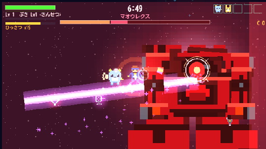
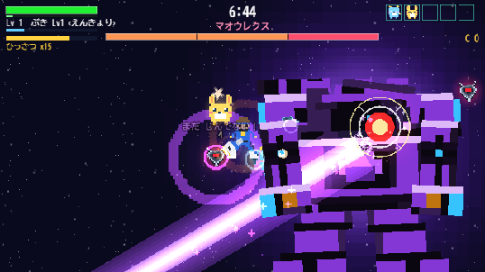
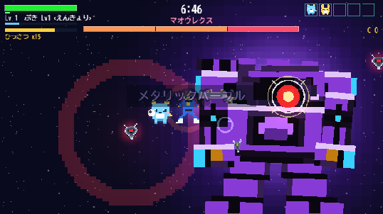
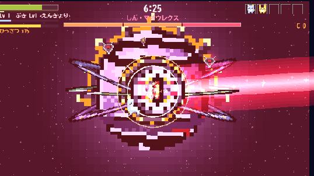
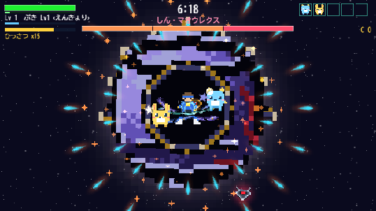

真マオウレクス「軌道神核」― 修正6件 完了
いただいた6件の修正指示への実装報告です。画像はすべて Phaser の実描画（実プレイの画面そのもの）。
v20260827-4 ／ タイトル画面の左下がこの番号なら届いています
① BGMはギターで確定
「①ギター（ひずみ）」が本編の既定だったので、そのまま本採用です。れんしゅうじょうの聞き比べ（T→4→B）には
①に「★さいよう」の印を付け、④に軌道神核の専用曲を追加しました＝転生まで進まなくても B キーで聞けます。
② レーザーは「分離したとき」の技へ ― じゃがんレーザー（紫）

じゃがんレーザー（旧・レーザー改め）／分離した上半身の単眼バイザーから撃つので「邪眼」。
紫の縁＋白熱の芯の2層ビーム。分離した直後の1手目がこれ＝「分かれたら撃ってくる」が最初の1回で伝わります

じゃしんレーザー（旧・きょうぶレーザー改め）／再合体後は胸の炉心＝心臓から撃つので「邪神」。
同じ紫の2層。眼→心臓、と撃つ場所が名前で分かる対の命名です
- 出現時（分離前）の表からレーザーを削除 ― ナックルウェーブ／ワイヤーアーム／ミサイル・バルカン・ノヴァの5種に
- 照射時の効果音を新設（darkLaser）― 高から低へ落ちる歪んだうなり。邪悪な音は下へ落ちます
- 受けた実感 ― 専用の被弾音（バチィッ＋焼かれるジリジリ）＋ビームの進行方向へ吹き飛ばされる＋画面の揺れとヒットストップ
③ 再合体＝本物のメタリックパープルに

再合体後／赤い装甲の主面が完全に紫。金冠とシアンの炉心はアクセントとして残しています
「一部のみ変わった」の正体：今までは色を「掛け算」で紫にしていましたが、掛け算では赤は紫になりません
（赤 #e5202c に紫を掛けても #970d2c＝赤のまま。赤には青の成分がほぼ無いので、何を掛けても青は増えない）。
灰色の装甲だけが紫がかり、赤い主面が赤のまま残っていました。今回は紫のパレットでテクスチャそのものを焼き直し、
再合体の白フラッシュの裏で丸ごと差し替えています。
④ 整列レーザー＝深みのある赤＋最大の発射演出

整列レーザー（深紅）／3つの環が射線方向へ一直線に揃って発射。暗い深紅の縁＋白熱の芯の2層
＝「深みのある赤」は1色では出ず、縁と芯の階層でしか出ません。紫のじゃがん・じゃしんに対し、純白の神核が撃つのは血の色

（参考）殻閉じ。閉じきる前に眼へ当て続ければ割れます＝実測で成立も中断もどちらも起きることを確認済み
- 発射音 godLaser を新設 ― 点火の閃光→地を踏む低音→本物の歪み（WaveShaper）を通した照射の轟音→金属の悲鳴、の4段構成。
発射の瞬間はBGMを深く沈めます＝世界がこの一撃に譲る
- 演出 ― 白フラッシュ0.55＋画面の揺れ700ms＋ヒットストップ＋ビームに沿って散る火花。溜めの後半から赤い粒子を混ぜ、「深紅が来る」を色でも予告
- 受けた実感 ― じゃがんレーザーと同じ3点セット（専用音・吹き飛ばし・揺れ）
⑤ 軌道神核の専用BGM ― ギターの土台に「神々しさ」を積む
マオウレクス戦BGM（採用されたギター編成）を土台のまま、神々しさの声部を上へ足しました。
転生の沈黙のあと、この曲で鳴らし直します。
- 鐘が倍の頻度＋段の頭でカリヨンの3連打（高い音から降りてくる＝「天から降る」方向）
- 聖歌隊が最初から歌い続ける（元の曲は第3段から。神々しさは「あとから来る」ものではなくこの姿の常態）
- 光背ドローン ― 和音の4倍音の高いサインが頭上で鳴り続ける光
- 天使の声 ― 主題を1オクターブ上のやわらかい声が常にユニゾンでなぞる
邪悪な音は下へ落ち（じゃがんレーザーの発射音）、神々しい音は上へ昇る（この曲の追加声部）。
同じ作曲のまま編成が昇格するので「同じ戦いの、別の段」だと耳で分かります。れんしゅうじょうの B キー④でも聞けます。
⑥ 戦闘の長さ ― 35秒前後に設計（おまかせ分）
| 測ったもの | 結果 | 設計 |
|---|
| 真の姿の戦闘の長さ（実測3回） | 34.5 / 34.6 / 33.7 秒 | 35秒前後 |
| 攻撃3種の発射 | 整列3回・聖句3回・殻閉じ3回 | 各3回＝2周目で「読める」 |
| BGMの切替列 | maou → maou → maouTrue | 転生後に専用曲 |
| 紫テクスチャ | 9枚（全パーツ） | — |
| 実行時エラー | 0件 | — |
| 恒久ガード | 619 → 656件（+37） | 配置・改名・色を数で縛る |
35秒の根拠：①専用BGM（1周21.6秒）が1.6周＝4段構成（名乗り→追い立て→主題→頂点）を最後まで聞かせられる
②攻撃3種が各3回ずつ回り、「読んで避ける」が2周目で上達として実感できる ③「もう少し」の指示なので2倍にはしない
（40秒超はゲージ3本でも中だるみ）。HPは実測の削り速度から逆算し、ゲージは3本（1本≒12秒）にしました。
遊びに行くには
- 公開URL https://nori1975461.github.io/hayato-game/vortex/ ／ タイトル左下が v20260827-4 なら新版です
- タイトルで T → 4：マオウレクス戦。分離させるとじゃがんレーザー、再合体でメタリックパープル＋じゃしんレーザー、倒しきると転生して専用BGM＋深紅の整列レーザー
- T → 4 → B：BGMの聞き比べ（①ギター★さいよう／④きどうしんかく）